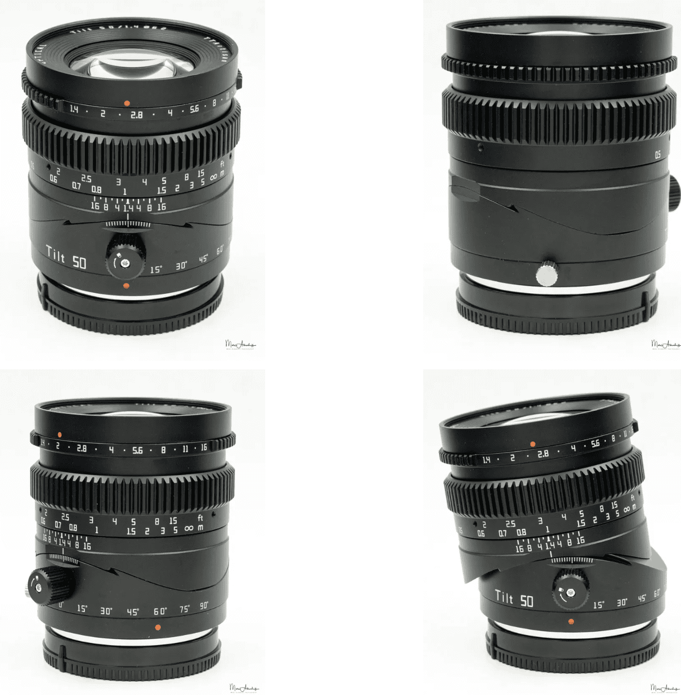

铭匠TTArtisan 50mm F1.4 Tilt_by SonyAlphaBlog
源：https://sonyalpha.blog/2022/10/14/TTArtisan-50mm-f1-4-tilt/
1 结论
铭匠TTArtisan 50mm F1.4 Tilt（\(1200_{TB,20221015}\)）是一只非常好的移轴镜头，移轴操作的工学设计非常不错，背景虚化柔和，可以实现非常漂亮的微缩景观效果，或者用来进行微距摄影。但在总体上还有所欠缺，尤其是F1.4光圈下的锐度表现较差。
这枚镜头的直接对手时岩石星Astrhori 50mm F1.4 Tilt（\(1288_{TB,20221015}\)）。岩石星这只移轴在移轴操作上效率差了些，但是锐度表现要好很多。

- 优势
- 非常好的移轴操作工学设计
- 非常奈斯的移轴效果
- 价格
- 背景虚化柔和
- 光圈全开时，焦外光斑挺不错
- 非常棒的色彩还原度
- 无级光圈
- 做工非常棒
- 一般
- F2.8光圈下的锐度
- 畸变
- 暗角
- 抗眩光
- 光圈全开有色散
- 重量
- F2光圈下的焦外光斑形状
- 非移轴模式下的成像
- 缺陷
- 光圈全开锐度较差
- 边角锐度较差
2 总体信息
2.1 移轴镜头是个啥？
移轴的原理可以参考Theodor Scheimpflug在矫正航空摄影时研发的数学模型。通过改变镜头和相机胶片/CMOS的相对角度，他改变了接收图像的视角。
通过倾斜/旋转镜身，改变焦平面。 - 一般情况下，焦平面平行于传感器（左）； - 如果你倾斜镜身，焦平面也会跟着倾斜，这对于多个对焦主体所在平面与传感器不平行有很大的帮助（中），称为Scheimpflug效应（Scheimpflug Effect）； - 或者，你可以将镜身转向另一个方向，来聚焦对焦主题（右），称为反Scheimpflug效应（Anti-Scheimpflug Effect）；

反Scheimpflug效应也是非常著名的微型化效应（Miniaturization Effect），图像中仅有一部分是清晰的，其余部分都是模糊不清的。

2.2 Spec
- 重量：477g
- 价格：\(1200_{TB,20221015}\)
- 长度：70mm
- 滤镜：62mm
- 光圈叶片：12
- 对焦环
- 移轴倾斜行程：8°
- 移轴旋转行程：90°
- 最近对焦距离：50cm
- 无遮光罩
铭匠TTArtisan 50mm F1.4 Tilt做工非常棒，无级调节的光圈环和阻尼很棒的对焦环带来非常不错的使用体验。
镜身上的黑色螺丝是用来对移轴倾斜进行锁止的。将螺丝拧松即可调整倾斜的角度，拧紧螺丝来固定角度。在高端的移轴中，使用按钮来调节倾斜，倾斜步进为1度，很有用但是不能精确调节。
镜身底部另一个银色的螺丝是用来控制移轴旋转的，旋转步进为15度。移轴倾斜和移轴旋转可以同时使用，来获取需要的角度和姿态。如果需要恢复初始状态，调节起来非常方便；熟练的话，1秒即可解决。
 
3 光学性能
3.1 锐度

- 测试使用6100万像素的A7R4。
- 光圈全开，中心锐度只能达到Average级别；建议使用光圈F2.8，锐度表现可以达到Very Good级别。
- 变焦会比中心稍差，光圈F2.8只有Good级别，需要缩小到F5.6才能获得Very Good级别。
总的来说，光圈1.4下非常柔，使用时一定要使用F2甚至F2.8来提高整体成像的锐度表现。
3.2 暗角/色散/畸变/眩光
- 畸变比较大。
- F1.4光圈下，暗角非常明显；移轴倾斜到最大时，暗角会变得更大；光圈缩小到F5.6时，暗角会消失。
- 色散在F1.4光圈下在光线周围会有紫边和绿色光晕。
- 防眩光做的比较一般。
- 光圈F16才能得到一点星芒。
3.3 焦外/色彩还原度
- 焦外光斑在光圈全开时还是非常好的：非常规整的圆形，没有洋葱圈；但收光圈到F2，就会出现12边形。
- 背景虚化非常棒，也很柔和。
- 色彩还原度还是挺好的。
4 视频
视频总的来说还是不错的。锐度可以达到Good级别，背景虚化很平滑，色彩还原度也不错。无级光圈的加持可以解锁一些更加平滑的操作。呼吸效应比较小。移轴的特性可以扩展一些不错的效果。
5 与其它移轴镜头比较
比较对象是岩石星Astrhori 50mm F1.4 Tilt
| TTArtisan 50mm 1.4 | AstrHori 50mm F1.4 Tilt | |
|---|---|---|
| 价格 | \(1200_{TB,20221015}\) | \(1288_{TB,20221015}\) |
| 重量 | 477g | 339g |
| 长度 | 70mm | 68mm |
| 自动对焦 | 无 | 无 |
| 光圈环 | 无级 | 无级 |
| 工学设计 | 两个螺丝分别用来锁止倾斜和旋转 | 全向活动，全局锁止 |
| 最近对焦距离 | 50cm | 40cm |
| 做工 | *** | ** |
| 光圈叶片 | 12 | 12 |
| 滤镜 | 62mm | 46mm |
总的来说，铭匠TTArtisan的做工要更好，工学设计上也更好，给倾斜和旋转提供单独的锁止螺丝。岩石星的全向角度调整则会稍微自由一点。

锐度方面，岩石星Astrhori要比TTArtisan这枚移轴好得多，铭匠TTArtisan 50mm F1.4非移轴版本同样有好得多的锐度表现。锐度上，铭匠TTArtisan移轴还是挺让人失望的。
- 背景虚化上，铭匠TTArtisan要更加柔和，岩石星Astrhori则有更好的焦外光斑。
- 色彩还原度上，铭匠TTArtisan要比Astrhori好。
- 畸变和暗角上，两只差不多。
- 色散和抗眩光上，岩石星Astrhori会稍微好那么一点点，领先不多。
- 移轴的使用体验上，铭匠TTArtisan的工学设计明显有更好的使用体验。
5.1 对比小结
- 岩石星Astrhori的锐度更好，色散和眩光会稍微弱一点。铭匠TTArtisan在移轴控制上更加得心应手，色彩和背景虚化也有些许优势。
- 这两只镜头都是需要取舍的，得看你更看重那些参数。